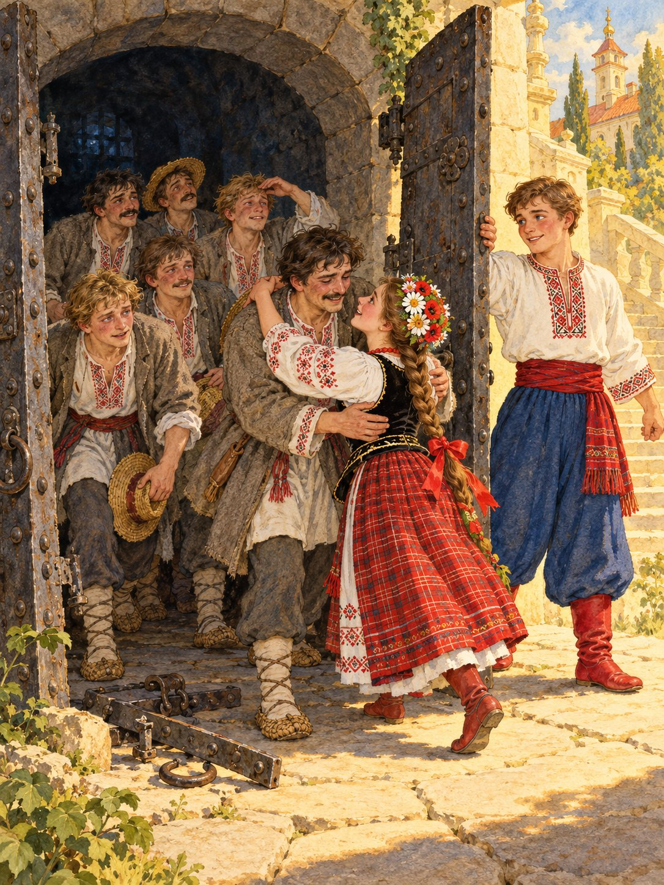

Котигорошко зламав важкі двері підземелля й випустив братів. Вийшли вони бліді й стомлені, та очі їхні світилися радістю. Сестра обіймала кожного й не могла натішитися.
— Хто ж ти такий, що подолав Змія? — питали брати.
— Я ваш найменший брат, — усміхнувся Котигорошко.
Забрали вони зі зміїного палацу золото й срібло і рушили всі разом додому.
